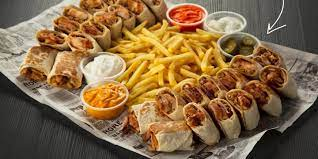

Shawerma Page

best food at 5PM, let's know how to make it!
Ingredients:
- freshly squeezed lemon juice
- chicken thighs and/or, chicken breast
- crushed red pepper flakes
Instructions:
- Note: The chicken can be cooked on the barbeque grill or in the oven under the broiler.
- Marinate the chicken:
- Place the chicken in a large bowl and add all of the spices, olive oil, garlic cloves, and lemon juice. Toss well to coat the chicken. Add the onion slices and mix them together. Cover the bowl in plastic wrap and set aside to marinate at least 30 minutes or overnight in the refrigerator.
- If marinating overnight allow the chicken to sit out at room temperature for an hour before cooking.
- Make the Sauce: Combine all of the sauce ingredients together and whisk well. Taste and add salt if needed. This sauce keeps well in an airtight container stored in the refrigerator for 4-5 days.
- For the Broiler:
- Set the broiler to high and place the oven rack under the broiler element.
- Place a rack on a metal baking tray.
- Arrange the chicken on the rack and broil for 16-18 minutes or until the internal temperature of the meat reaches 165 °F.
- For the Grill:
- Heat the grill then add the marinated chicken onto the grill. Cook over medium-high heat for about 20 minutes. Flip the chicken over after 10 minutes. When the internal temperature of the chicken reaches 165 °F it is ready. Transfer the chicken to a bowl.
- Slice the chicken into strips and serve.
- Shawarma Bowl:
- Fill a salad bowl with your favorite greens (lettuce, shredded cabbage, etc.) some chopped tomatoes, onions, and cucumbers and top with the chicken shawarma slices. Drizzle some shawarma sauce on top and serve.
- Shawarma Pita:
- Lightly toast a pita. Spread 1 tablespoon of the sauce in the center of the pita. Top with ¼ cup of salad (any shredded lettuce, chopped tomatoes, cucumbers, and onion slices. Top with chicken shawarma and some more sauce. Roll up and serve!
What are you waiting! go on, and have a great Shawerma meal